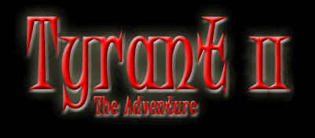

Tyrant II is a roguelike game in which you play a lone hero in a world of adventure and magic.
You start your journeys near a small town, tasked with a mission to recover an ancient artifact known as The Emerald Sword.
You will be richly rewarded if you suceed, but many dangers lie in your path.....
You will travel through the province of Karrain :
You will find the dungeon in the wild forest :
And in the dungeons you have to find the lost Emerald sword :